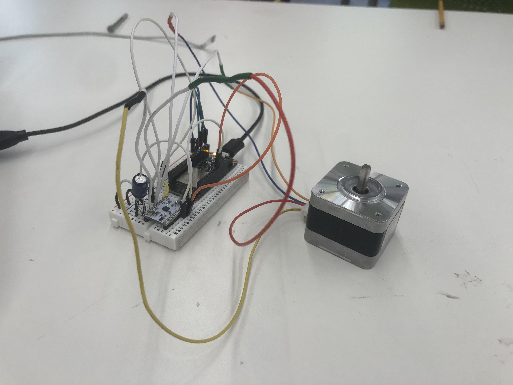
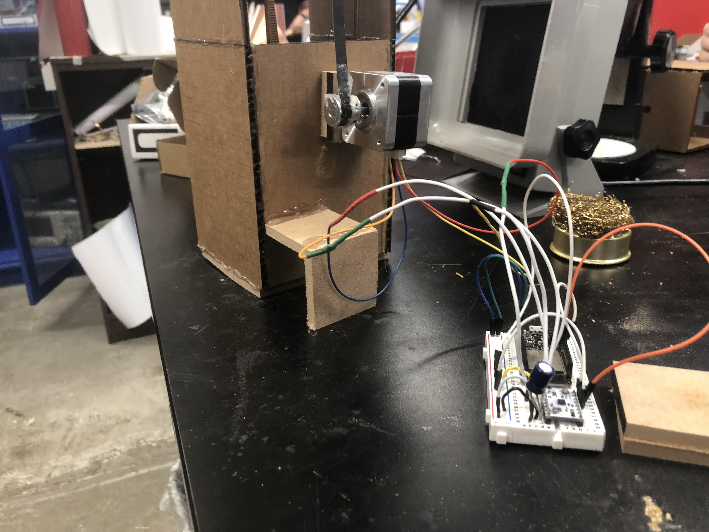
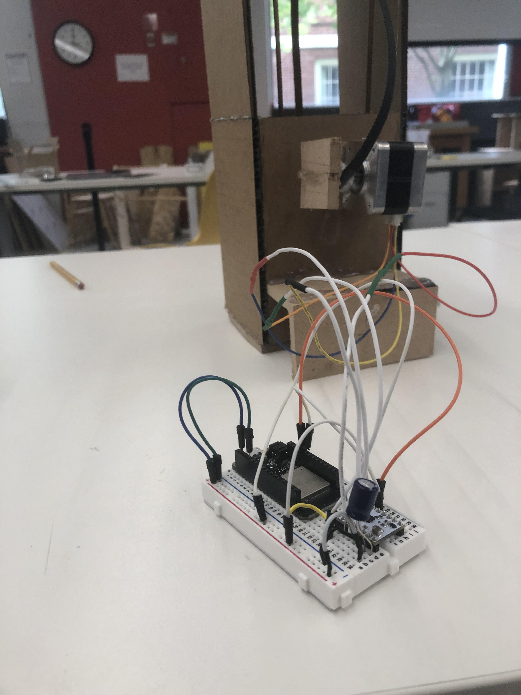

Week 9: Machine Building and End Effectors
Week 9 was a challenging one, stepper motors definitely have a high learning curve that I want to keep practicing
To start off, I was having issues with some of the wiring
As a reminder: Always make sure you're checking your wiring for any issues (especially when the issue is that you dont have power connected)
Here is a picture of my wiring and how it was connected to my motor
Aside from, yknow, not having my power plugged in there was another mistake id like to warn you of if you try to replicate this
Make sure you solder carefully, to make the process easier strip the wires of the motor and solder on male to male wire types
When you do that, make sure you use the heat press to make sure nothing sticks out and you should be good
Either way, for this weeks project I decided to revisit one of my old projects: my elevator from kinetic structures
I thought this was a good project to revisit as stepper motors allow me to have more control over the elevator itself
Issue was, the motor was really really heavy. As a result, I had to make a simple way to balance out the structure
Now just do that for both sides, and there you go! The elevator shaft should stand on its own
#include
const int stepsPerRevolution = 200;
Stepper myStepper(stepsPerRevolution, 12, 13);
void setup() {
myStepper.setSpeed(100);
Serial.begin(9600);
}
void loop() {
myStepper.step(-2000);
delay(2000);
myStepper.step(2000);
delay(2000);
}
My code honestly wasnt anything crazy, I really only need the elevator to know when to stop and start
With a little bit of trial and error you can find that out pretty easily, and adjust accordingly

Sadly though, my elevator years in service were starting to catch up to it, and I was having some issues making it stable
I tried my best to fix it as best I could but couldnt really make much of a difference from home, so I decided to leave this week and focus on my newest venture, my final project